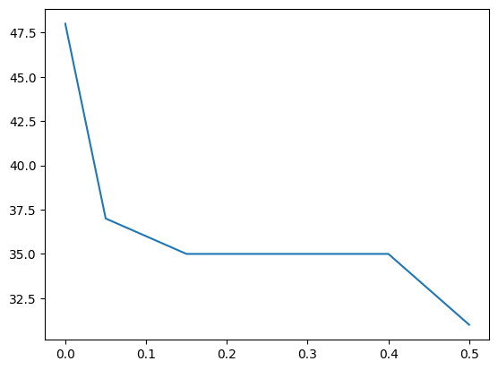

data_path = '/home/naji/Desktop/github-repos/machine-learning/nbs/0-datasets/data/'Data Cleaning
from numpy import loadtxt
from numpy import unique
from pandas import read_csvBasic Data Cleaning
Identify Columns That Contain a Single Value
data_path = '/home/naji/Desktop/github-repos/machine-learning/nbs/0-datasets/data/'data = loadtxt(data_path + 'oil-spill.csv', delimiter=',')Method 1
dataarray([[1.00000e+00, 2.55800e+03, 1.50609e+03, ..., 6.57400e+01,
7.95000e+00, 1.00000e+00],
[2.00000e+00, 2.23250e+04, 7.91100e+01, ..., 6.57300e+01,
6.26000e+00, 0.00000e+00],
[3.00000e+00, 1.15000e+02, 1.44985e+03, ..., 6.58100e+01,
7.84000e+00, 1.00000e+00],
...,
[2.02000e+02, 1.40000e+01, 2.51400e+01, ..., 6.59100e+01,
6.12000e+00, 0.00000e+00],
[2.03000e+02, 1.00000e+01, 9.60000e+01, ..., 6.59700e+01,
6.32000e+00, 0.00000e+00],
[2.04000e+02, 1.10000e+01, 7.73000e+00, ..., 6.56500e+01,
6.26000e+00, 0.00000e+00]])data.shape(937, 50)for i in range(data.shape[1]):
print(i, len(unique(data[:,i])))0 238
1 297
2 927
3 933
4 179
5 375
6 820
7 618
8 561
9 57
10 577
11 59
12 73
13 107
14 53
15 91
16 893
17 810
18 170
19 53
20 68
21 9
22 1
23 92
24 9
25 8
26 9
27 308
28 447
29 392
30 107
31 42
32 4
33 45
34 141
35 110
36 3
37 758
38 9
39 9
40 388
41 220
42 644
43 649
44 499
45 2
46 937
47 169
48 286
49 2Method 2
df = read_csv(data_path + 'oil-spill.csv', header=None)
df| 0 | 1 | 2 | 3 | 4 | 5 | 6 | 7 | 8 | 9 | ... | 40 | 41 | 42 | 43 | 44 | 45 | 46 | 47 | 48 | 49 | |
|---|---|---|---|---|---|---|---|---|---|---|---|---|---|---|---|---|---|---|---|---|---|
| 0 | 1 | 2558 | 1506.09 | 456.63 | 90 | 6395000.0 | 40.88 | 7.89 | 29780.0 | 0.19 | ... | 2850.00 | 1000.00 | 763.16 | 135.46 | 3.73 | 0 | 33243.19 | 65.74 | 7.95 | 1 |
| 1 | 2 | 22325 | 79.11 | 841.03 | 180 | 55812500.0 | 51.11 | 1.21 | 61900.0 | 0.02 | ... | 5750.00 | 11500.00 | 9593.48 | 1648.80 | 0.60 | 0 | 51572.04 | 65.73 | 6.26 | 0 |
| 2 | 3 | 115 | 1449.85 | 608.43 | 88 | 287500.0 | 40.42 | 7.34 | 3340.0 | 0.18 | ... | 1400.00 | 250.00 | 150.00 | 45.13 | 9.33 | 1 | 31692.84 | 65.81 | 7.84 | 1 |
| 3 | 4 | 1201 | 1562.53 | 295.65 | 66 | 3002500.0 | 42.40 | 7.97 | 18030.0 | 0.19 | ... | 6041.52 | 761.58 | 453.21 | 144.97 | 13.33 | 1 | 37696.21 | 65.67 | 8.07 | 1 |
| 4 | 5 | 312 | 950.27 | 440.86 | 37 | 780000.0 | 41.43 | 7.03 | 3350.0 | 0.17 | ... | 1320.04 | 710.63 | 512.54 | 109.16 | 2.58 | 0 | 29038.17 | 65.66 | 7.35 | 0 |
| ... | ... | ... | ... | ... | ... | ... | ... | ... | ... | ... | ... | ... | ... | ... | ... | ... | ... | ... | ... | ... | ... |
| 932 | 200 | 12 | 92.42 | 364.42 | 135 | 97200.0 | 59.42 | 10.34 | 884.0 | 0.17 | ... | 381.84 | 254.56 | 84.85 | 146.97 | 4.50 | 0 | 2593.50 | 65.85 | 6.39 | 0 |
| 933 | 201 | 11 | 98.82 | 248.64 | 159 | 89100.0 | 59.64 | 10.18 | 831.0 | 0.17 | ... | 284.60 | 180.00 | 150.00 | 51.96 | 1.90 | 0 | 4361.25 | 65.70 | 6.53 | 0 |
| 934 | 202 | 14 | 25.14 | 428.86 | 24 | 113400.0 | 60.14 | 17.94 | 847.0 | 0.30 | ... | 402.49 | 180.00 | 180.00 | 0.00 | 2.24 | 0 | 2153.05 | 65.91 | 6.12 | 0 |
| 935 | 203 | 10 | 96.00 | 451.30 | 68 | 81000.0 | 59.90 | 15.01 | 831.0 | 0.25 | ... | 402.49 | 180.00 | 90.00 | 73.48 | 4.47 | 0 | 2421.43 | 65.97 | 6.32 | 0 |
| 936 | 204 | 11 | 7.73 | 235.73 | 135 | 89100.0 | 61.82 | 12.24 | 831.0 | 0.20 | ... | 254.56 | 254.56 | 127.28 | 180.00 | 2.00 | 0 | 3782.68 | 65.65 | 6.26 | 0 |
937 rows × 50 columns
print(df.nunique())0 238
1 297
2 927
3 933
4 179
5 375
6 820
7 618
8 561
9 57
10 577
11 59
12 73
13 107
14 53
15 91
16 893
17 810
18 170
19 53
20 68
21 9
22 1
23 92
24 9
25 8
26 9
27 308
28 447
29 392
30 107
31 42
32 4
33 45
34 141
35 110
36 3
37 758
38 9
39 9
40 388
41 220
42 644
43 649
44 499
45 2
46 937
47 169
48 286
49 2
dtype: int64Delete Columns That Contain a Single Value
df = read_csv(data_path + 'oil-spill.csv', header=None)
df.shape(937, 50)counts= df.nunique()
counts0 238
1 297
2 927
3 933
4 179
5 375
6 820
7 618
8 561
9 57
10 577
11 59
12 73
13 107
14 53
15 91
16 893
17 810
18 170
19 53
20 68
21 9
22 1
23 92
24 9
25 8
26 9
27 308
28 447
29 392
30 107
31 42
32 4
33 45
34 141
35 110
36 3
37 758
38 9
39 9
40 388
41 220
42 644
43 649
44 499
45 2
46 937
47 169
48 286
49 2
dtype: int64to_del = [i for i, v in enumerate(counts) if v==1]
print(to_del)[22]df.drop(to_del, axis=1, inplace=True)
print(df.shape)(937, 49)Consider Columns That Have Very Few Values
data = loadtxt(data_path + 'oil-spill.csv', delimiter=',')
dataarray([[1.00000e+00, 2.55800e+03, 1.50609e+03, ..., 6.57400e+01,
7.95000e+00, 1.00000e+00],
[2.00000e+00, 2.23250e+04, 7.91100e+01, ..., 6.57300e+01,
6.26000e+00, 0.00000e+00],
[3.00000e+00, 1.15000e+02, 1.44985e+03, ..., 6.58100e+01,
7.84000e+00, 1.00000e+00],
...,
[2.02000e+02, 1.40000e+01, 2.51400e+01, ..., 6.59100e+01,
6.12000e+00, 0.00000e+00],
[2.03000e+02, 1.00000e+01, 9.60000e+01, ..., 6.59700e+01,
6.32000e+00, 0.00000e+00],
[2.04000e+02, 1.10000e+01, 7.73000e+00, ..., 6.56500e+01,
6.26000e+00, 0.00000e+00]])for i in range(data.shape[1]):
num = len(unique(data[:, i]))
percentage = float(num) / data.shape[0]*100
print(f'{i}, {num}, {percentage: 0.1f}%')0, 238, 25.4%
1, 297, 31.7%
2, 927, 98.9%
3, 933, 99.6%
4, 179, 19.1%
5, 375, 40.0%
6, 820, 87.5%
7, 618, 66.0%
8, 561, 59.9%
9, 57, 6.1%
10, 577, 61.6%
11, 59, 6.3%
12, 73, 7.8%
13, 107, 11.4%
14, 53, 5.7%
15, 91, 9.7%
16, 893, 95.3%
17, 810, 86.4%
18, 170, 18.1%
19, 53, 5.7%
20, 68, 7.3%
21, 9, 1.0%
22, 1, 0.1%
23, 92, 9.8%
24, 9, 1.0%
25, 8, 0.9%
26, 9, 1.0%
27, 308, 32.9%
28, 447, 47.7%
29, 392, 41.8%
30, 107, 11.4%
31, 42, 4.5%
32, 4, 0.4%
33, 45, 4.8%
34, 141, 15.0%
35, 110, 11.7%
36, 3, 0.3%
37, 758, 80.9%
38, 9, 1.0%
39, 9, 1.0%
40, 388, 41.4%
41, 220, 23.5%
42, 644, 68.7%
43, 649, 69.3%
44, 499, 53.3%
45, 2, 0.2%
46, 937, 100.0%
47, 169, 18.0%
48, 286, 30.5%
49, 2, 0.2%for i in range(data.shape[1]):
num = len(unique(data[:, i]))
percentage = float(num) / data.shape[0] * 100
if percentage < 1:
print(f'{i}, {num}, {percentage: .1f}%')21, 9, 1.0%
22, 1, 0.1%
24, 9, 1.0%
25, 8, 0.9%
26, 9, 1.0%
32, 4, 0.4%
36, 3, 0.3%
38, 9, 1.0%
39, 9, 1.0%
45, 2, 0.2%
49, 2, 0.2%counts = df.nunique()to_del = [i for i,v in enumerate(counts) if (float(v)/df.shape[0]*100) < 1]to_del[21, 23, 24, 25, 31, 35, 37, 38, 44, 48]df.drop(to_del, axis=1, inplace=True)df.shape(937, 39)Remove Columns That Have A Low Variance
from numpy import arange
from pandas import read_csv
from sklearn.feature_selection import VarianceThreshold
from matplotlib import pyplotdf = read_csv(data_path + 'oil-spill.csv', header=None)
df| 0 | 1 | 2 | 3 | 4 | 5 | 6 | 7 | 8 | 9 | ... | 40 | 41 | 42 | 43 | 44 | 45 | 46 | 47 | 48 | 49 | |
|---|---|---|---|---|---|---|---|---|---|---|---|---|---|---|---|---|---|---|---|---|---|
| 0 | 1 | 2558 | 1506.09 | 456.63 | 90 | 6395000.0 | 40.88 | 7.89 | 29780.0 | 0.19 | ... | 2850.00 | 1000.00 | 763.16 | 135.46 | 3.73 | 0 | 33243.19 | 65.74 | 7.95 | 1 |
| 1 | 2 | 22325 | 79.11 | 841.03 | 180 | 55812500.0 | 51.11 | 1.21 | 61900.0 | 0.02 | ... | 5750.00 | 11500.00 | 9593.48 | 1648.80 | 0.60 | 0 | 51572.04 | 65.73 | 6.26 | 0 |
| 2 | 3 | 115 | 1449.85 | 608.43 | 88 | 287500.0 | 40.42 | 7.34 | 3340.0 | 0.18 | ... | 1400.00 | 250.00 | 150.00 | 45.13 | 9.33 | 1 | 31692.84 | 65.81 | 7.84 | 1 |
| 3 | 4 | 1201 | 1562.53 | 295.65 | 66 | 3002500.0 | 42.40 | 7.97 | 18030.0 | 0.19 | ... | 6041.52 | 761.58 | 453.21 | 144.97 | 13.33 | 1 | 37696.21 | 65.67 | 8.07 | 1 |
| 4 | 5 | 312 | 950.27 | 440.86 | 37 | 780000.0 | 41.43 | 7.03 | 3350.0 | 0.17 | ... | 1320.04 | 710.63 | 512.54 | 109.16 | 2.58 | 0 | 29038.17 | 65.66 | 7.35 | 0 |
| ... | ... | ... | ... | ... | ... | ... | ... | ... | ... | ... | ... | ... | ... | ... | ... | ... | ... | ... | ... | ... | ... |
| 932 | 200 | 12 | 92.42 | 364.42 | 135 | 97200.0 | 59.42 | 10.34 | 884.0 | 0.17 | ... | 381.84 | 254.56 | 84.85 | 146.97 | 4.50 | 0 | 2593.50 | 65.85 | 6.39 | 0 |
| 933 | 201 | 11 | 98.82 | 248.64 | 159 | 89100.0 | 59.64 | 10.18 | 831.0 | 0.17 | ... | 284.60 | 180.00 | 150.00 | 51.96 | 1.90 | 0 | 4361.25 | 65.70 | 6.53 | 0 |
| 934 | 202 | 14 | 25.14 | 428.86 | 24 | 113400.0 | 60.14 | 17.94 | 847.0 | 0.30 | ... | 402.49 | 180.00 | 180.00 | 0.00 | 2.24 | 0 | 2153.05 | 65.91 | 6.12 | 0 |
| 935 | 203 | 10 | 96.00 | 451.30 | 68 | 81000.0 | 59.90 | 15.01 | 831.0 | 0.25 | ... | 402.49 | 180.00 | 90.00 | 73.48 | 4.47 | 0 | 2421.43 | 65.97 | 6.32 | 0 |
| 936 | 204 | 11 | 7.73 | 235.73 | 135 | 89100.0 | 61.82 | 12.24 | 831.0 | 0.20 | ... | 254.56 | 254.56 | 127.28 | 180.00 | 2.00 | 0 | 3782.68 | 65.65 | 6.26 | 0 |
937 rows × 50 columns
data = df.valuesX = data[:, :-1]
y = data[:, -1]print(X.shape, y.shape)(937, 49) (937,)thresholds = arange(0, 0.55, 0.05)
results = list()
for t in thresholds:
transform = VarianceThreshold(threshold=t)
X_sel = transform.fit_transform(X)
n_features = X_sel.shape[1]
print(f'> Threshold={t: .2f}, Features={n_features}')
results.append(n_features)> Threshold= 0.00, Features=48
> Threshold= 0.05, Features=37
> Threshold= 0.10, Features=36
> Threshold= 0.15, Features=35
> Threshold= 0.20, Features=35
> Threshold= 0.25, Features=35
> Threshold= 0.30, Features=35
> Threshold= 0.35, Features=35
> Threshold= 0.40, Features=35
> Threshold= 0.45, Features=33
> Threshold= 0.50, Features=31pyplot.plot(thresholds, results)
pyplot.show()
Identify Rows That Contain Duplicate Data
df = read_csv(data_path + 'iris.csv')
df| sepal_length | sepal_width | petal_length | petal_width | species | |
|---|---|---|---|---|---|
| 0 | 5.1 | 3.5 | 1.4 | 0.2 | Iris-setosa |
| 1 | 4.9 | 3.0 | 1.4 | 0.2 | Iris-setosa |
| 2 | 4.7 | 3.2 | 1.3 | 0.2 | Iris-setosa |
| 3 | 4.6 | 3.1 | 1.5 | 0.2 | Iris-setosa |
| 4 | 5.0 | 3.6 | 1.4 | 0.2 | Iris-setosa |
| ... | ... | ... | ... | ... | ... |
| 145 | 6.7 | 3.0 | 5.2 | 2.3 | Iris-virginica |
| 146 | 6.3 | 2.5 | 5.0 | 1.9 | Iris-virginica |
| 147 | 6.5 | 3.0 | 5.2 | 2.0 | Iris-virginica |
| 148 | 6.2 | 3.4 | 5.4 | 2.3 | Iris-virginica |
| 149 | 5.9 | 3.0 | 5.1 | 1.8 | Iris-virginica |
150 rows × 5 columns
dups = df.duplicated()
dups0 False
1 False
2 False
3 False
4 False
...
145 False
146 False
147 False
148 False
149 False
Length: 150, dtype: boolprint(dups.any())Trueprint(df[dups]) sepal_length sepal_width petal_length petal_width species
34 4.9 3.1 1.5 0.1 Iris-setosa
37 4.9 3.1 1.5 0.1 Iris-setosa
142 5.8 2.7 5.1 1.9 Iris-virginicaDelete Rows That Contain Duplicate Data
df.shape(150, 5)df.drop_duplicates(inplace=True)df.shape(147, 5)Outlier Identification and Removal
from numpy.random import randn, seed
from numpy import mean, stdTest Dataset
seed(1)data = 5 * randn(10000) + 50print(f'{mean(data): .3f}, ({std(data):.3f})') 50.049, (4.994)Standard Deviation Method
data = 5 * randn(10000) + 50
dataarray([49.38763047, 51.14084909, 48.23847435, ..., 62.04216899,
54.41392775, 49.50201845])data_mean, data_std = mean(data), std(data)cut_off = data_std * 3lower, upper = data_mean - cut_off, data_mean + cut_offoutliers = [x for x in data if x < lower or x > upper]
print(f'Identified outliers: {len(outliers)}')Identified outliers: 26outliers_removed = [x for x in data if x >= lower and x <= upper]
print(f'Non-outlier observations: {len(outliers_removed)}')Non-outlier observations: 9974Interquartile Range Method
from numpy import percentiledata = 5 * randn(10000) + 50q25, q75 = percentile(data, 25), percentile(data, 75)iqr = q75 - q25print(f'Percentiles: 25th={q25:.3f}, 75th={q75:.3f}, IQR={iqr:.3f}')Percentiles: 25th=46.567, 75th=53.215, IQR=6.647cut_off = iqr * 1.5lower, upper = q25 - cut_off, q75 + cut_offoutliers = [x for x in data if x < lower or x > upper]
print(f'Identified outliers: {len(outliers)}')Identified outliers: 75outliers_removed = [x for x in data if x >= lower and x <= upper]
print(f'Non-outlier observations: {len(outliers_removed)}')Non-outlier observations: 9925Automatic Outlier Detection
from pandas import read_csv
from sklearn.model_selection import train_test_split
from sklearn.linear_model import LinearRegression
from sklearn.metrics import mean_absolute_errorPredicting without removing outliers
df = read_csv(data_path + 'boston-housing.csv', header=None, delim_whitespace=True)
df| 0 | 1 | 2 | 3 | 4 | 5 | 6 | 7 | 8 | 9 | 10 | 11 | 12 | 13 | |
|---|---|---|---|---|---|---|---|---|---|---|---|---|---|---|
| 0 | 0.00632 | 18.0 | 2.31 | 0 | 0.538 | 6.575 | 65.2 | 4.0900 | 1 | 296.0 | 15.3 | 396.90 | 4.98 | 24.0 |
| 1 | 0.02731 | 0.0 | 7.07 | 0 | 0.469 | 6.421 | 78.9 | 4.9671 | 2 | 242.0 | 17.8 | 396.90 | 9.14 | 21.6 |
| 2 | 0.02729 | 0.0 | 7.07 | 0 | 0.469 | 7.185 | 61.1 | 4.9671 | 2 | 242.0 | 17.8 | 392.83 | 4.03 | 34.7 |
| 3 | 0.03237 | 0.0 | 2.18 | 0 | 0.458 | 6.998 | 45.8 | 6.0622 | 3 | 222.0 | 18.7 | 394.63 | 2.94 | 33.4 |
| 4 | 0.06905 | 0.0 | 2.18 | 0 | 0.458 | 7.147 | 54.2 | 6.0622 | 3 | 222.0 | 18.7 | 396.90 | 5.33 | 36.2 |
| ... | ... | ... | ... | ... | ... | ... | ... | ... | ... | ... | ... | ... | ... | ... |
| 501 | 0.06263 | 0.0 | 11.93 | 0 | 0.573 | 6.593 | 69.1 | 2.4786 | 1 | 273.0 | 21.0 | 391.99 | 9.67 | 22.4 |
| 502 | 0.04527 | 0.0 | 11.93 | 0 | 0.573 | 6.120 | 76.7 | 2.2875 | 1 | 273.0 | 21.0 | 396.90 | 9.08 | 20.6 |
| 503 | 0.06076 | 0.0 | 11.93 | 0 | 0.573 | 6.976 | 91.0 | 2.1675 | 1 | 273.0 | 21.0 | 396.90 | 5.64 | 23.9 |
| 504 | 0.10959 | 0.0 | 11.93 | 0 | 0.573 | 6.794 | 89.3 | 2.3889 | 1 | 273.0 | 21.0 | 393.45 | 6.48 | 22.0 |
| 505 | 0.04741 | 0.0 | 11.93 | 0 | 0.573 | 6.030 | 80.8 | 2.5050 | 1 | 273.0 | 21.0 | 396.90 | 7.88 | 11.9 |
506 rows × 14 columns
data = df.values
X, y = data[:, :-1], data[:, -1]
X.shape, y.shape((506, 13), (506,))X_train, X_test, y_train, y_test = train_test_split(X, y, test_size=0.33, random_state=1)model = LinearRegression()
model.fit(X_train, y_train)LinearRegression()In a Jupyter environment, please rerun this cell to show the HTML representation or trust the notebook.
On GitHub, the HTML representation is unable to render, please try loading this page with nbviewer.org.
LinearRegression()
yhat = model.predict(X_test)mae = mean_absolute_error(y_test, yhat)
print(f'{mae:0.3f}')3.417Predicting after removing outliers
from sklearn.neighbors import LocalOutlierFactordf = read_csv(data_path + 'boston-housing.csv', delim_whitespace=True, header=None)
df| 0 | 1 | 2 | 3 | 4 | 5 | 6 | 7 | 8 | 9 | 10 | 11 | 12 | 13 | |
|---|---|---|---|---|---|---|---|---|---|---|---|---|---|---|
| 0 | 0.00632 | 18.0 | 2.31 | 0 | 0.538 | 6.575 | 65.2 | 4.0900 | 1 | 296.0 | 15.3 | 396.90 | 4.98 | 24.0 |
| 1 | 0.02731 | 0.0 | 7.07 | 0 | 0.469 | 6.421 | 78.9 | 4.9671 | 2 | 242.0 | 17.8 | 396.90 | 9.14 | 21.6 |
| 2 | 0.02729 | 0.0 | 7.07 | 0 | 0.469 | 7.185 | 61.1 | 4.9671 | 2 | 242.0 | 17.8 | 392.83 | 4.03 | 34.7 |
| 3 | 0.03237 | 0.0 | 2.18 | 0 | 0.458 | 6.998 | 45.8 | 6.0622 | 3 | 222.0 | 18.7 | 394.63 | 2.94 | 33.4 |
| 4 | 0.06905 | 0.0 | 2.18 | 0 | 0.458 | 7.147 | 54.2 | 6.0622 | 3 | 222.0 | 18.7 | 396.90 | 5.33 | 36.2 |
| ... | ... | ... | ... | ... | ... | ... | ... | ... | ... | ... | ... | ... | ... | ... |
| 501 | 0.06263 | 0.0 | 11.93 | 0 | 0.573 | 6.593 | 69.1 | 2.4786 | 1 | 273.0 | 21.0 | 391.99 | 9.67 | 22.4 |
| 502 | 0.04527 | 0.0 | 11.93 | 0 | 0.573 | 6.120 | 76.7 | 2.2875 | 1 | 273.0 | 21.0 | 396.90 | 9.08 | 20.6 |
| 503 | 0.06076 | 0.0 | 11.93 | 0 | 0.573 | 6.976 | 91.0 | 2.1675 | 1 | 273.0 | 21.0 | 396.90 | 5.64 | 23.9 |
| 504 | 0.10959 | 0.0 | 11.93 | 0 | 0.573 | 6.794 | 89.3 | 2.3889 | 1 | 273.0 | 21.0 | 393.45 | 6.48 | 22.0 |
| 505 | 0.04741 | 0.0 | 11.93 | 0 | 0.573 | 6.030 | 80.8 | 2.5050 | 1 | 273.0 | 21.0 | 396.90 | 7.88 | 11.9 |
506 rows × 14 columns
data = df.values
X, y = data[:, :-1], data[:, -1]X_train, X_test, y_train, y_test = train_test_split(X, y, test_size=0.33, random_state=1)print(X_train.shape, y_train.shape)(339, 13) (339,)lof = LocalOutlierFactor()yhat = lof.fit_predict(X_train)mask = yhat != -1X_train, y_train = X_train[mask, :], y_train[mask]print(X_train.shape, y_train.shape)(305, 13) (305,)model = LinearRegression()
model.fit(X_train, y_train)LinearRegression()In a Jupyter environment, please rerun this cell to show the HTML representation or trust the notebook.
On GitHub, the HTML representation is unable to render, please try loading this page with nbviewer.org.
LinearRegression()
yhat = model.predict(X_test)mae = mean_absolute_error(y_test, yhat)
print(f'MAE: {mae:.3f}')MAE: 3.356Remove Missing Data
from numpy import nan
from sklearn.discriminant_analysis import LinearDiscriminantAnalysis
from sklearn.model_selection import KFold, cross_val_scoreMark Missing Values
dataset = read_csv(data_path + 'pima-indians-diabetes.csv', header=None)
dataset.head(20)| 0 | 1 | 2 | 3 | 4 | 5 | 6 | 7 | 8 | |
|---|---|---|---|---|---|---|---|---|---|
| 0 | 6 | 148 | 72 | 35 | 0 | 33.6 | 0.627 | 50 | 1 |
| 1 | 1 | 85 | 66 | 29 | 0 | 26.6 | 0.351 | 31 | 0 |
| 2 | 8 | 183 | 64 | 0 | 0 | 23.3 | 0.672 | 32 | 1 |
| 3 | 1 | 89 | 66 | 23 | 94 | 28.1 | 0.167 | 21 | 0 |
| 4 | 0 | 137 | 40 | 35 | 168 | 43.1 | 2.288 | 33 | 1 |
| 5 | 5 | 116 | 74 | 0 | 0 | 25.6 | 0.201 | 30 | 0 |
| 6 | 3 | 78 | 50 | 32 | 88 | 31.0 | 0.248 | 26 | 1 |
| 7 | 10 | 115 | 0 | 0 | 0 | 35.3 | 0.134 | 29 | 0 |
| 8 | 2 | 197 | 70 | 45 | 543 | 30.5 | 0.158 | 53 | 1 |
| 9 | 8 | 125 | 96 | 0 | 0 | 0.0 | 0.232 | 54 | 1 |
| 10 | 4 | 110 | 92 | 0 | 0 | 37.6 | 0.191 | 30 | 0 |
| 11 | 10 | 168 | 74 | 0 | 0 | 38.0 | 0.537 | 34 | 1 |
| 12 | 10 | 139 | 80 | 0 | 0 | 27.1 | 1.441 | 57 | 0 |
| 13 | 1 | 189 | 60 | 23 | 846 | 30.1 | 0.398 | 59 | 1 |
| 14 | 5 | 166 | 72 | 19 | 175 | 25.8 | 0.587 | 51 | 1 |
| 15 | 7 | 100 | 0 | 0 | 0 | 30.0 | 0.484 | 32 | 1 |
| 16 | 0 | 118 | 84 | 47 | 230 | 45.8 | 0.551 | 31 | 1 |
| 17 | 7 | 107 | 74 | 0 | 0 | 29.6 | 0.254 | 31 | 1 |
| 18 | 1 | 103 | 30 | 38 | 83 | 43.3 | 0.183 | 33 | 0 |
| 19 | 1 | 115 | 70 | 30 | 96 | 34.6 | 0.529 | 32 | 1 |
dataset.describe()| 0 | 1 | 2 | 3 | 4 | 5 | 6 | 7 | 8 | |
|---|---|---|---|---|---|---|---|---|---|
| count | 768.000000 | 768.000000 | 768.000000 | 768.000000 | 768.000000 | 768.000000 | 768.000000 | 768.000000 | 768.000000 |
| mean | 3.845052 | 120.894531 | 69.105469 | 20.536458 | 79.799479 | 31.992578 | 0.471876 | 33.240885 | 0.348958 |
| std | 3.369578 | 31.972618 | 19.355807 | 15.952218 | 115.244002 | 7.884160 | 0.331329 | 11.760232 | 0.476951 |
| min | 0.000000 | 0.000000 | 0.000000 | 0.000000 | 0.000000 | 0.000000 | 0.078000 | 21.000000 | 0.000000 |
| 25% | 1.000000 | 99.000000 | 62.000000 | 0.000000 | 0.000000 | 27.300000 | 0.243750 | 24.000000 | 0.000000 |
| 50% | 3.000000 | 117.000000 | 72.000000 | 23.000000 | 30.500000 | 32.000000 | 0.372500 | 29.000000 | 0.000000 |
| 75% | 6.000000 | 140.250000 | 80.000000 | 32.000000 | 127.250000 | 36.600000 | 0.626250 | 41.000000 | 1.000000 |
| max | 17.000000 | 199.000000 | 122.000000 | 99.000000 | 846.000000 | 67.100000 | 2.420000 | 81.000000 | 1.000000 |
num_missing = (dataset[[1,2,3,4,5]] == 0).sum()
print(num_missing)1 5
2 35
3 227
4 374
5 11
dtype: int64dataset[[1,2,3,4,5]] = dataset[[1,2,3,4,5]].replace(0, nan)print(dataset.isnull().sum())0 0
1 5
2 35
3 227
4 374
5 11
6 0
7 0
8 0
dtype: int64print(dataset.head(20)) 0 1 2 3 4 5 6 7 8
0 6 148.0 72.0 35.0 NaN 33.6 0.627 50 1
1 1 85.0 66.0 29.0 NaN 26.6 0.351 31 0
2 8 183.0 64.0 NaN NaN 23.3 0.672 32 1
3 1 89.0 66.0 23.0 94.0 28.1 0.167 21 0
4 0 137.0 40.0 35.0 168.0 43.1 2.288 33 1
5 5 116.0 74.0 NaN NaN 25.6 0.201 30 0
6 3 78.0 50.0 32.0 88.0 31.0 0.248 26 1
7 10 115.0 NaN NaN NaN 35.3 0.134 29 0
8 2 197.0 70.0 45.0 543.0 30.5 0.158 53 1
9 8 125.0 96.0 NaN NaN NaN 0.232 54 1
10 4 110.0 92.0 NaN NaN 37.6 0.191 30 0
11 10 168.0 74.0 NaN NaN 38.0 0.537 34 1
12 10 139.0 80.0 NaN NaN 27.1 1.441 57 0
13 1 189.0 60.0 23.0 846.0 30.1 0.398 59 1
14 5 166.0 72.0 19.0 175.0 25.8 0.587 51 1
15 7 100.0 NaN NaN NaN 30.0 0.484 32 1
16 0 118.0 84.0 47.0 230.0 45.8 0.551 31 1
17 7 107.0 74.0 NaN NaN 29.6 0.254 31 1
18 1 103.0 30.0 38.0 83.0 43.3 0.183 33 0
19 1 115.0 70.0 30.0 96.0 34.6 0.529 32 1Missing Values Cause Problems
dataset = read_csv(data_path + 'pima-indians-diabetes.csv', header=None)
dataset.head(20)| 0 | 1 | 2 | 3 | 4 | 5 | 6 | 7 | 8 | |
|---|---|---|---|---|---|---|---|---|---|
| 0 | 6 | 148 | 72 | 35 | 0 | 33.6 | 0.627 | 50 | 1 |
| 1 | 1 | 85 | 66 | 29 | 0 | 26.6 | 0.351 | 31 | 0 |
| 2 | 8 | 183 | 64 | 0 | 0 | 23.3 | 0.672 | 32 | 1 |
| 3 | 1 | 89 | 66 | 23 | 94 | 28.1 | 0.167 | 21 | 0 |
| 4 | 0 | 137 | 40 | 35 | 168 | 43.1 | 2.288 | 33 | 1 |
| 5 | 5 | 116 | 74 | 0 | 0 | 25.6 | 0.201 | 30 | 0 |
| 6 | 3 | 78 | 50 | 32 | 88 | 31.0 | 0.248 | 26 | 1 |
| 7 | 10 | 115 | 0 | 0 | 0 | 35.3 | 0.134 | 29 | 0 |
| 8 | 2 | 197 | 70 | 45 | 543 | 30.5 | 0.158 | 53 | 1 |
| 9 | 8 | 125 | 96 | 0 | 0 | 0.0 | 0.232 | 54 | 1 |
| 10 | 4 | 110 | 92 | 0 | 0 | 37.6 | 0.191 | 30 | 0 |
| 11 | 10 | 168 | 74 | 0 | 0 | 38.0 | 0.537 | 34 | 1 |
| 12 | 10 | 139 | 80 | 0 | 0 | 27.1 | 1.441 | 57 | 0 |
| 13 | 1 | 189 | 60 | 23 | 846 | 30.1 | 0.398 | 59 | 1 |
| 14 | 5 | 166 | 72 | 19 | 175 | 25.8 | 0.587 | 51 | 1 |
| 15 | 7 | 100 | 0 | 0 | 0 | 30.0 | 0.484 | 32 | 1 |
| 16 | 0 | 118 | 84 | 47 | 230 | 45.8 | 0.551 | 31 | 1 |
| 17 | 7 | 107 | 74 | 0 | 0 | 29.6 | 0.254 | 31 | 1 |
| 18 | 1 | 103 | 30 | 38 | 83 | 43.3 | 0.183 | 33 | 0 |
| 19 | 1 | 115 | 70 | 30 | 96 | 34.6 | 0.529 | 32 | 1 |
dataset[[1,2,3,4,5]] = dataset[[1,2,3,4,5]].replace(0, nan)values = dataset.values
X = values[:, 0:8]
y = values[:, 8]model = LinearDiscriminantAnalysis()cv = KFold(n_splits=3, shuffle=True, random_state=1)result = cross_val_score(model, X, y, cv=cv, scoring='accuracy')
print(f'{result:0.3f}')ValueError:
All the 3 fits failed.
It is very likely that your model is misconfigured.
You can try to debug the error by setting error_score='raise'.
Below are more details about the failures:
--------------------------------------------------------------------------------
3 fits failed with the following error:
Traceback (most recent call last):
File "/home/naji/miniconda2/envs/nbdev/lib/python3.9/site-packages/sklearn/model_selection/_validation.py", line 686, in _fit_and_score
estimator.fit(X_train, y_train, **fit_params)
File "/home/naji/miniconda2/envs/nbdev/lib/python3.9/site-packages/sklearn/discriminant_analysis.py", line 550, in fit
X, y = self._validate_data(
File "/home/naji/miniconda2/envs/nbdev/lib/python3.9/site-packages/sklearn/base.py", line 596, in _validate_data
X, y = check_X_y(X, y, **check_params)
File "/home/naji/miniconda2/envs/nbdev/lib/python3.9/site-packages/sklearn/utils/validation.py", line 1074, in check_X_y
X = check_array(
File "/home/naji/miniconda2/envs/nbdev/lib/python3.9/site-packages/sklearn/utils/validation.py", line 899, in check_array
_assert_all_finite(
File "/home/naji/miniconda2/envs/nbdev/lib/python3.9/site-packages/sklearn/utils/validation.py", line 146, in _assert_all_finite
raise ValueError(msg_err)
ValueError: Input X contains NaN.
LinearDiscriminantAnalysis does not accept missing values encoded as NaN natively. For supervised learning, you might want to consider sklearn.ensemble.HistGradientBoostingClassifier and Regressor which accept missing values encoded as NaNs natively. Alternatively, it is possible to preprocess the data, for instance by using an imputer transformer in a pipeline or drop samples with missing values. See https://scikit-learn.org/stable/modules/impute.html You can find a list of all estimators that handle NaN values at the following page: https://scikit-learn.org/stable/modules/impute.html#estimators-that-handle-nan-valuesRemove Rows With Missing Values
dataset = read_csv(data_path + 'pima-indians-diabetes.csv', header=None)dataset[[1,2,3,4,5]] = dataset[[1,2,3,4,5]].replace(0, nan)dataset.dropna(inplace=True)values = dataset.values
X = values[:, 0:8]
y = values[:,8]model = LinearDiscriminantAnalysis()cv = KFold(n_splits=3, shuffle=True, random_state=1)result = cross_val_score(model, X, y, cv=cv, scoring='accuracy')print(f'Accuracy:{result.mean():0.3f}')Accuracy:0.781Imputation
Horse Colic Dataset
dataframe = read_csv(data_path + 'horse-colic.csv', header=None, na_values='?')
dataframe.head()| 0 | 1 | 2 | 3 | 4 | 5 | 6 | 7 | 8 | 9 | ... | 18 | 19 | 20 | 21 | 22 | 23 | 24 | 25 | 26 | 27 | |
|---|---|---|---|---|---|---|---|---|---|---|---|---|---|---|---|---|---|---|---|---|---|
| 0 | 2.0 | 1 | 530101 | 38.5 | 66.0 | 28.0 | 3.0 | 3.0 | NaN | 2.0 | ... | 45.0 | 8.4 | NaN | NaN | 2.0 | 2 | 11300 | 0 | 0 | 2 |
| 1 | 1.0 | 1 | 534817 | 39.2 | 88.0 | 20.0 | NaN | NaN | 4.0 | 1.0 | ... | 50.0 | 85.0 | 2.0 | 2.0 | 3.0 | 2 | 2208 | 0 | 0 | 2 |
| 2 | 2.0 | 1 | 530334 | 38.3 | 40.0 | 24.0 | 1.0 | 1.0 | 3.0 | 1.0 | ... | 33.0 | 6.7 | NaN | NaN | 1.0 | 2 | 0 | 0 | 0 | 1 |
| 3 | 1.0 | 9 | 5290409 | 39.1 | 164.0 | 84.0 | 4.0 | 1.0 | 6.0 | 2.0 | ... | 48.0 | 7.2 | 3.0 | 5.3 | 2.0 | 1 | 2208 | 0 | 0 | 1 |
| 4 | 2.0 | 1 | 530255 | 37.3 | 104.0 | 35.0 | NaN | NaN | 6.0 | 2.0 | ... | 74.0 | 7.4 | NaN | NaN | 2.0 | 2 | 4300 | 0 | 0 | 2 |
5 rows × 28 columns
for i in range(dataframe.shape[1]):
n_miss = dataframe[[i]].isnull().sum()
perc = (n_miss / dataframe.shape[0]) * 100
print('%d, Missing: %d (%.1f%%) ' % (i, n_miss, perc))0, Missing: 1 (0.3%)
1, Missing: 0 (0.0%)
2, Missing: 0 (0.0%)
3, Missing: 60 (20.0%)
4, Missing: 24 (8.0%)
5, Missing: 58 (19.3%)
6, Missing: 56 (18.7%)
7, Missing: 69 (23.0%)
8, Missing: 47 (15.7%)
9, Missing: 32 (10.7%)
10, Missing: 55 (18.3%)
11, Missing: 44 (14.7%)
12, Missing: 56 (18.7%)
13, Missing: 104 (34.7%)
14, Missing: 106 (35.3%)
15, Missing: 247 (82.3%)
16, Missing: 102 (34.0%)
17, Missing: 118 (39.3%)
18, Missing: 29 (9.7%)
19, Missing: 33 (11.0%)
20, Missing: 165 (55.0%)
21, Missing: 198 (66.0%)
22, Missing: 1 (0.3%)
23, Missing: 0 (0.0%)
24, Missing: 0 (0.0%)
25, Missing: 0 (0.0%)
26, Missing: 0 (0.0%)
27, Missing: 0 (0.0%) Statistical Imputation
Statistical Imputation With SimpleImputer
from numpy import isnan
from sklearn.impute import SimpleImputerdataframe = read_csv(data_path + 'horse-colic.csv', header=None, na_values='?')
dataframe| 0 | 1 | 2 | 3 | 4 | 5 | 6 | 7 | 8 | 9 | ... | 18 | 19 | 20 | 21 | 22 | 23 | 24 | 25 | 26 | 27 | |
|---|---|---|---|---|---|---|---|---|---|---|---|---|---|---|---|---|---|---|---|---|---|
| 0 | 2.0 | 1 | 530101 | 38.5 | 66.0 | 28.0 | 3.0 | 3.0 | NaN | 2.0 | ... | 45.0 | 8.4 | NaN | NaN | 2.0 | 2 | 11300 | 0 | 0 | 2 |
| 1 | 1.0 | 1 | 534817 | 39.2 | 88.0 | 20.0 | NaN | NaN | 4.0 | 1.0 | ... | 50.0 | 85.0 | 2.0 | 2.0 | 3.0 | 2 | 2208 | 0 | 0 | 2 |
| 2 | 2.0 | 1 | 530334 | 38.3 | 40.0 | 24.0 | 1.0 | 1.0 | 3.0 | 1.0 | ... | 33.0 | 6.7 | NaN | NaN | 1.0 | 2 | 0 | 0 | 0 | 1 |
| 3 | 1.0 | 9 | 5290409 | 39.1 | 164.0 | 84.0 | 4.0 | 1.0 | 6.0 | 2.0 | ... | 48.0 | 7.2 | 3.0 | 5.3 | 2.0 | 1 | 2208 | 0 | 0 | 1 |
| 4 | 2.0 | 1 | 530255 | 37.3 | 104.0 | 35.0 | NaN | NaN | 6.0 | 2.0 | ... | 74.0 | 7.4 | NaN | NaN | 2.0 | 2 | 4300 | 0 | 0 | 2 |
| ... | ... | ... | ... | ... | ... | ... | ... | ... | ... | ... | ... | ... | ... | ... | ... | ... | ... | ... | ... | ... | ... |
| 295 | 1.0 | 1 | 533886 | NaN | 120.0 | 70.0 | 4.0 | NaN | 4.0 | 2.0 | ... | 55.0 | 65.0 | NaN | NaN | 3.0 | 2 | 3205 | 0 | 0 | 2 |
| 296 | 2.0 | 1 | 527702 | 37.2 | 72.0 | 24.0 | 3.0 | 2.0 | 4.0 | 2.0 | ... | 44.0 | NaN | 3.0 | 3.3 | 3.0 | 1 | 2208 | 0 | 0 | 1 |
| 297 | 1.0 | 1 | 529386 | 37.5 | 72.0 | 30.0 | 4.0 | 3.0 | 4.0 | 1.0 | ... | 60.0 | 6.8 | NaN | NaN | 2.0 | 1 | 3205 | 0 | 0 | 2 |
| 298 | 1.0 | 1 | 530612 | 36.5 | 100.0 | 24.0 | 3.0 | 3.0 | 3.0 | 1.0 | ... | 50.0 | 6.0 | 3.0 | 3.4 | 1.0 | 1 | 2208 | 0 | 0 | 1 |
| 299 | 1.0 | 1 | 534618 | 37.2 | 40.0 | 20.0 | NaN | NaN | NaN | NaN | ... | 36.0 | 62.0 | 1.0 | 1.0 | 3.0 | 2 | 6112 | 0 | 0 | 2 |
300 rows × 28 columns
data = dataframe.valuesix = [i for i in range(data.shape[1]) if i != 23]
X, y = data[:, ix], data[:, 23]print(f'Missing: {sum(isnan(X).flatten())}')Missing: 1605imputer = SimpleImputer(strategy='mean')imputer.fit(X)SimpleImputer()In a Jupyter environment, please rerun this cell to show the HTML representation or trust the notebook.
On GitHub, the HTML representation is unable to render, please try loading this page with nbviewer.org.
SimpleImputer()
Xtrans = imputer.transform(X)print(f'Missing: {sum(isnan(Xtrans).flatten())}')Missing: 0KNN Imputation
Nearest Neighbor Imputation with KNNImputer
from numpy import isnan
from sklearn.impute import KNNImputerdata = dataframe.valuesix = [i for i in range(data.shape[1]) if i != 23]X, y = data[:, ix], data[:, 23]print(f'Missing: {sum(isnan(X).flatten())}')Missing: 1605imputer = KNNImputer()imputer.fit(X)KNNImputer()In a Jupyter environment, please rerun this cell to show the HTML representation or trust the notebook.
On GitHub, the HTML representation is unable to render, please try loading this page with nbviewer.org.
KNNImputer()
Xtrans = imputer.transform(X)print(f'Missing: {sum(isnan(Xtrans).flatten())}')Missing: 0KNNImputer and Model Evaluation
from sklearn.ensemble import RandomForestClassifier
from sklearn.pipeline import Pipeline
from sklearn.model_selection import RepeatedStratifiedKFold, cross_val_scoredf = read_csv(data_path + 'horse-colic.csv', header=None, na_values='?')data = df.valuesix = [i for i in range(data.shape[1]) if i != 23]X, y = data[:, ix], data[:, 23]model = RandomForestClassifier()
imputer = KNNImputer()pipeline = Pipeline(steps=[('i', imputer), ('m', model)])cv = RepeatedStratifiedKFold(n_splits=10, n_repeats=3, random_state=1)scores = cross_val_score(pipeline, X, y, scoring='accuracy', cv=cv)print(f'{scores.mean():.3f} ({scores.std():.3f})')0.862 (0.048)KNNImputer and Different Number of Neighbors
from matplotlib import pyplotdf = read_csv(data_path + 'horse-colic.csv', header=None, na_values='?')data = df.valuesix = [i for i in range(data.shape[1]) if i != 23]X, y = data[:, ix], data[:, 23]results = list()
strategies = [str(i) for i in [1,3,5,7,9,15,18,21]]for s in strategies:
pipeline = Pipeline(steps=[('i', KNNImputer(n_neighbors=int(s))), ('m', RandomForestClassifier())])
cv = RepeatedStratifiedKFold(n_splits=10, n_repeats=3, random_state=1)
scores = cross_val_score(pipeline, X, y, scoring='accuracy', cv=cv)
results.append(scores)
print(f'{s} {scores.mean():.3f} ({scores.std():0.3f})')pyplot.boxplot(results, labels=strategies, showmeans=True)
pyplot.show()KNNImputer Transform When Making a Prediction
from numpy import nandf = read_csv(data_path + 'horse-colic.csv', header=None, na_values='?')data = df.valuesix = [i for i in range(data.shape[1]) if i != 23]X, y = data[:, ix], data[:, 23]pipeline = Pipeline(steps=[('i', KNNImputer(n_neighbors=21)), ('m', RandomForestClassifier())])pipeline.fit(X, y)row = [2, 1, 530101, 38.50, 66, 28, 3, 3, nan, 2, 5, 4, 4, nan, nan, nan, 3, 5, 45.00,
8.40, nan, nan, 2, 11300, 00000, 00000, 2]yhat = pipeline.predict([row])print(f'Predicted Class: {yhat[0]}')Iterative Imputation
from numpy import isnan
from sklearn.experimental import enable_iterative_imputer
from sklearn.impute import IterativeImputerIterative Imputation With IterativeImputer
IterativeImputer Data Transform
df = read_csv(data_path + 'horse-colic.csv', header = None, na_values='?')data = df.valuesix = [i for i in range(data.shape[1]) if i != 23]X, y = data[:, ix], data[:, 23]print(f'Missing: {sum(isnan(X).flatten())}')imputer = IterativeImputer()imputer.fit(X)Xtrans = imputer.transform(X)print(f'Missing: {sum(isnan(Xtrans).flatten())}')IterativeImputer and Model Evaluation
from sklearn.ensemble import RandomForestClassifier
from sklearn.pipeline import Pipeline
from sklearn.model_selection import RepeatedStratifiedKFold, cross_val_scoredf = read_csv(data_path + 'horse-colic.csv', header=None, na_values='?')data = df.valuesix = [i for i in range(data.shape[1]) if i != 23]X, y = data[:, ix], data[:, 23]model = RandomForestClassifier()imputer = IterativeImputer()pipeline = Pipeline(steps=[('i', imputer), ('m', model)])cv = RepeatedStratifiedKFold(n_splits=10, n_repeats=3, random_state=1)scores = cross_val_score(pipeline, X, y, scoring='accuracy', cv=cv)print(f'{scores.mean():.3f} ({scores.std():.3f})')IterativeImputer and Different Imputation Order
from matplotlib import pyplotdataframe = read_csv(data_path+'horse-colic.csv', header=None, na_values= '?' )
data = dataframe.values
ix = [i for i in range(data.shape[1]) if i != 23]
X, y = data[:, ix], data[:, 23]results = list()strategies = ['ascending', 'descending', 'roman', 'arabic', 'random']for s in strategies:
pipeline = Pipeline(steps=[('i', IterativeImputer(imputation_order=s)), ('m', RandomForestClassifier())])
cv = RepeatedStratifiedKFold(n_splits=10, n_repeats=3, random_state=1)
scores = cross_val_score(pipeline, X, y, scoring='accuracy', cv=cv)
results.append(scores)
print(f'{s}: {scores.mean():.3f} ({scores.std():.3f})')pyplot.boxplot(results, showmeans=True, labels=strategies)
pyplot.show()IterativeImputer and Different Number of Iterations
IterativeImputer Transform When Making a Prediction